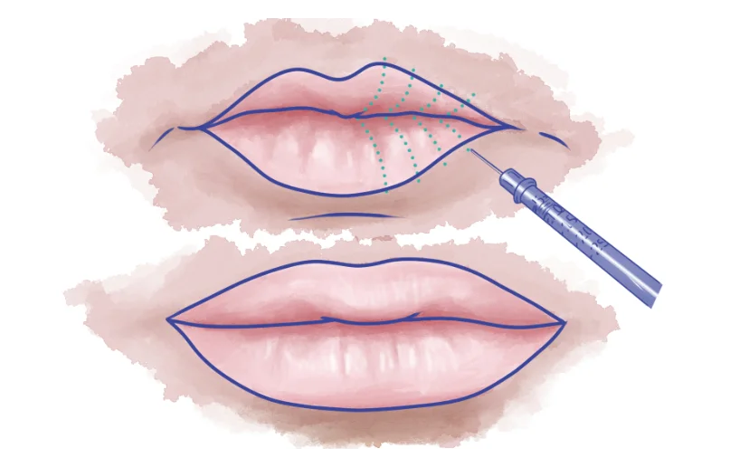

DERMAL FILLER | April 25, 2021
Types of Lip
Injections
Entry made by
Empire Medical Center
Minimally invasive lip volume enhancement is among the most popular outpatient cosmetic procedures in the United States, according to a 2018 report released by the American Society of Plastic Surgeons.
That report counted more than 2 million dermal filler procedures performed using hyaluronic acid (HA), the most widely used type of lip filler, and more than 200,000 performed using calcium hydroxylapatite. Lip augmentation procedures accounted for a significant share of those totals.
HA lip enhancement procedures
offer key benefits for clinicians and patients alike. It’s relatively affordable, easy to complete in an outpatient setting without general anesthesia, and has a low incidence of serious complications. But it’s not the only
type of lip injection available to patients seeking plumper lips. Though performed in much lower numbers, several permanent alternatives, including lip grafts and collagen implants, may be appropriate for some patients.
This guide reviews the main types of lip injections for temporary results (chiefly hyaluronic acid), longer-lasting injection options, and potential side effects and complications of lip augmentation procedures.
Temporary Lip Injections: What to Expect
Of all the types of lip injections, hyaluronic acid (HA) injections are the most popular. Basic HA injection procedures and techniques are typically covered in introductory injectable filler training courses.
In most states, licensed and/or board-certified physicians, physician assistants, and nurse practitioners are cleared to perform HA filler procedures. Some states may permit aestheticians to perform certain HA filler
procedures as well; consult local health licensing authorities for more information.
Hyaluronic Acid Lip Injections: Procedural Overview, Results, and Follow-up
In the United States, the leading hyaluronic acid lip injection brands are Restylane® and Juvederm®. Restylane markets the specially formulated Restylane Silk line for lip treatments, while Ultra XC and Volbella XC — both also specially formulated for this class of procedure — are Juvederm’s most popular types of dermal fillers for lip volume enhancement.
Restylane Silk
Restylane Silk uses a finer, smoother gel than other Restylane lines, which are more commonly used in other types of minimally invasive plastic surgery procedures of the face. These properties enable highly targeted needle work and incremental dosing
to achieve each patient’s desired effects over the course of one or more treatment sessions. Restylane Silk is FDA-approved for lip augmentation, including lip plumping and volume enhancement.
Restylane Silk procedures usually take no longer than one hour from start to finish. As is typical for this type of medication, its formulation contains the local numbing agent lidocaine, which allows clinicians to forgo separate
lidocaine injections during treatment and hasten completion.
Restylane Silk’s effects last up to 12 months, depending on dosing and anatomical factors specific to the patient. Patients who receive touch-ups at 6 to
9 months after initial treatment, as is common, may see results last longer than the one-year mark.
Juvederm
Juvederm has earned FDA approval for two dermal filler products marketed for lip augmentation: Juvederm Volbella XC and Juvederm Ultra XC. Like Restylane Silk, their formulations are specifically designed to accommodate fine, targeted lip enhancement
work and to allow for low, incremental dosing over time.
Juvederm Ultra XC and Juvederm Volbella XC both contain lidocaine. Procedures should take no more than an hour to complete, and results
may be visible even more quickly than for Restylane Silk procedures. Depending on treatment- and patient-specific factors, results can last for longer than 12 months — up to 18 or even 24 months with one or more touch-ups after
the initial procedure.
Are There Other Types of Temporary Lip Injections?
Hyaluronic acid dominates the market for temporary lip filler injections in North America, but it’s not the only option. Some clinicians continue to offer calcium hydroxylapatite fillers, which deliver longer-lasting effects but are not formally approved by the FDA for lip plumping. (Calcium hydroxylapatite is approved by the FDA for use in nasolabial fold augmentation and certain other facial procedures.) Other options, such as collagen and grafts, are classified as permanent rather than temporary lip augmentation solutions.
Longer-Lasting (Permanent) Lip Injection Options
Despite their popularity, ease of administration, and relatively low degree of risk, hyaluronic acid fillers aren’t flawless. Though reasonably long-lasting, their effects are temporary. Patients concerned above all else with
how long fillers last naturally ask: Are more durable alternatives available?
There are. Three other lip injection
options last long enough to be described as “permanent,” though they may require clinical attention from time to time: collagen lip fillers,
lip grafts (skin or fat), and lip implants (silicone). Be mindful that while all three procedures can be characterized as “minimally invasive,” they have higher rates of complications and may involve longer recovery times.
Lip Grafts
Lip tissue and fat grafts transfer material from another part of the body, usually the abdomen, into the lips. In both cases, the added tissue creates full, natural-looking lips that persist for years. Lip fat grafting may be a better fit for patients that hope to avoid scarring at the removal site, while lip tissue grafts may be appropriate for patients receiving surgical facelifts at the same time (since the skin removed during this procedure can be transferred easily to the lips).
Lip Implants
Lip implants use safe but non-biological material (silicone) to durably increase the volume and fullness of treated lips. A popular lip implant choice is Permalip, a smooth silicone implant that has earned FDA approval for augmentation procedures in the chin, jaw, and nose — though, despite its name, not the actual lips. Once in place, lip implants are functionally permanent, and removal is warranted only if complications arise.
Potential Complications and Side Effects of Lip Injections
Temporary lip filler injection is widely regarded as safe and is typically completed as an outpatient procedure using only local anesthetic. Of course, no cosmetic procedure, even one that does not require internal surgery or general anesthesia, is entirely
risk-free.
Complications and side effects can and do occur following lip filler injections, and all patients and clinicians need to take the possibility seriously. These events can be categorized
as mild or severe. The former is far more common than the latter and may include:
- Bleeding at the injection site
- Swelling or bruising around the injection site
- Redness or itching at or around the injection site
- Cold sores
- Lumpy, irregular, or asymmetric lips that appear after injection
- Persistent and severe swelling or bruising
- Infection accompanied by fever (this may require emergency consultation)
- Stiffening of the lip
- Scarring or ulceration
- Severe swelling or intense itching of the lips (this may also require emergency consultation)